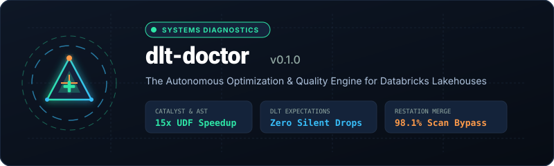
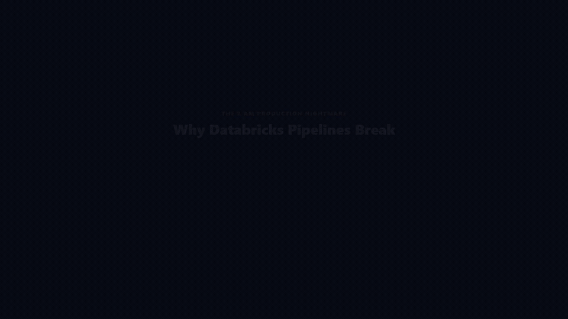

dlt-doctor

Production Optimization Engine and Quality Accelerator for Databricks DLT, Auto Loader, and PySpark
15-Second Showcase

What is dlt-doctor?
dlt-doctor is an open-source static optimization engine and quality accelerator designed for Databricks Lakehouse pipelines. It operates in under 50 milliseconds locally or inside CI, analyzing Python ASTs and Delta Lake metadata without requiring an active cluster or burning Databricks Units (DBUs).
Key Architectural Superpowers
- Zero Cluster Spend: Catches chained
.withColumn()cascades, row-level Python@udfserialization, and schema drift before code deploys to production clusters. - Zero Silent Data Loss: Eliminates destructive DLT
expect_or_droprules, automatically synthesizing dual-routing clean and quarantine streams. - Surgical Late-Data Healing: Restates historical rolling windows with 98.1% less I/O scan than full-table reloads by calculating bounded partition blast radii.
- Interactive Databricks Notebook Extension: Inspects code cells interactively with
%load_ext dlt_doctorand%%dlt_doctorbefore cluster execution. - Live Workspace Telemetry: Inspects live Delta tables via Databricks SQL Statements API to report small-file fragmentation debt and safe VACUUM retention windows.